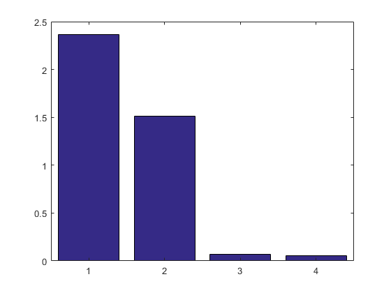
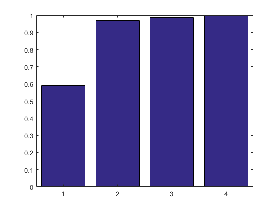
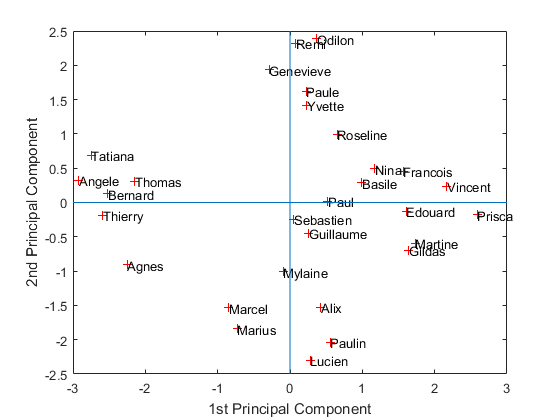
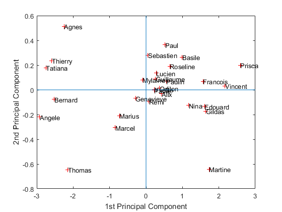
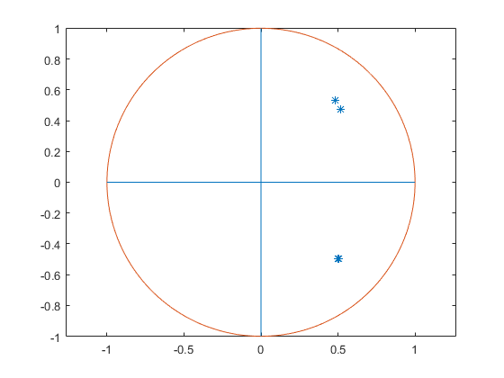
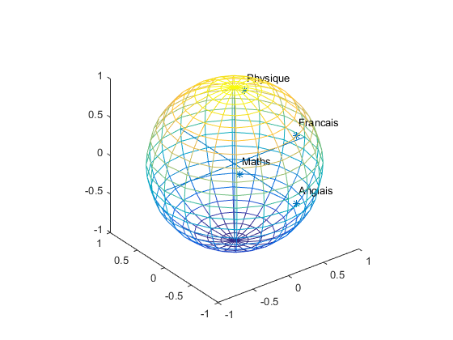

Contents
[dataNum, datatext, alldata] = xlsread('notes.xls','DATA');
Data=dataNum(:,1:4);
Variables = datatext(1,2:5)
Individuals = datatext(2:30,1)
[coeff,scores,eigen_values] = princomp(zscore(Data));
coeff
scores
eigen_values
figure('Name','Eigenvalue spectrum','NumberTitle','off');
bar(eigen_values);
Information_Percentage = cumsum(eigen_values)./sum(eigen_values)
figure('Name','% of cumulative inertia','NumberTitle','off');
bar(Information_Percentage);
figure('Name','individus','NumberTitle','off');
plot(scores(:,1),scores(:,2),'r+');
text(scores(:,1),scores(:,2),Individuals);
a = axis;
xl = a(1);xu = a(2);yl = a(3);yu = a(4);
xlabel('1st Principal Component')
ylabel('2nd Principal Component')
hold on
line([xl xu],[0 0])
line([0 0],[yl yu])
figure('Name','individuals 1/3','NumberTitle','off');
plot(scores(:,1),scores(:,3),'r+');
text(scores(:,1),scores(:,3),Individuals);
a = axis;
xl = a(1);xu = a(2);yl = a(3);yu = a(4);
xlabel('1st Principal Component')
ylabel('2nd Principal Component')
hold on
line([xl xu],[0 0])
line([0 0],[yl yu])
figure('Name','individuals 2/3','NumberTitle','off');
plot(scores(:,1),scores(:,3),'r+');
text(scores(:,1),scores(:,3),Individuals);
a = axis;
xl = a(1);xu = a(2);yl = a(3);yu = a(4);
xlabel('1st Principal Component')
ylabel('2nd Principal Component')
hold on
line([xl xu],[0 0])
line([0 0],[yl yu])
figure('Name','individuals 1 2 3','NumberTitle','off');
plot3(scores(:,1),scores(:,2),scores(:,3),'r+');
text(scores(:,1),scores(:,2),scores(:,3),Individuals);
a = axis;
xl = a(1);xu = a(2);yl = a(3);yu = a(4);z1=a(5);zu=a(6);
xlabel('1st Principal Component')
ylabel('2nd Principal Component')
zlabel('3nd Principal Component')
hold on
line([xl xu],[0, 0],[0, 0])
line([0 0],[yl yu],[0,0])
line([0 0],[0,0],[z1 zu])
figure('Name','Variables','NumberTitle','off');
plot(coeff(:,1),coeff(:,2),'*');
hold on
[x,y,z] = cylinder(1,200);
plot(x(1,:),y(1,:))
hold on
line([-1 1],[0 0])
line([0 0],[-1 1])
axis equal
Variables =
1×4 cell array
'Maths' 'Physique' 'Francais' 'Anglais'
Individuals =
29×1 cell array
'Basile'
'Thierry'
'Genevieve'
'Odilon'
'Edouard'
'Mylaine'
'Lucien'
'Alix'
'Guillaume'
'Paulin'
'Tatiana'
'Yvette'
'Nina'
'Remi'
'Marcel'
'Roseline'
'Prisca'
'Marius'
'Sebastien'
'Agnes'
'Vincent'
'Bernard'
'Francois'
'Paul'
'Paule'
'Angele'
'Thomas'
'Gildas'
'Martine'
coeff =
0.4807 0.5289 -0.5460 0.4371
0.5143 0.4760 0.5561 -0.4468
0.5026 -0.4963 0.4187 0.5707
0.5018 -0.4973 -0.4662 -0.5324
scores =
0.9954 0.2899 0.2649 -0.0312
-2.5917 -0.1891 0.2362 0.1536
-0.2890 1.9380 -0.0689 -0.1691
0.3671 2.3905 0.0128 -0.0449
1.6047 -0.1245 -0.1337 -0.2674
-0.0953 -1.0123 0.0808 -0.0682
0.2830 -2.2986 0.1366 0.2810
0.4260 -1.5282 -0.0310 -0.1570
0.2591 -0.4506 0.0892 -0.2663
0.5574 -2.0363 0.0705 -0.4207
-2.7481 0.6886 0.1792 -0.3771
0.2346 1.4201 0.0032 -0.0283
1.1738 0.4908 -0.1246 -0.0963
0.0777 2.3206 -0.0924 0.2264
-0.8471 -1.5376 -0.3049 0.0516
0.6552 0.9933 0.1906 -0.1706
2.5904 -0.1755 0.1995 0.4176
-0.7285 -1.8439 -0.2101 -0.0203
0.0525 -0.2459 0.2812 -0.0471
-2.2489 -0.9059 0.5137 0.1299
2.1701 0.2399 0.0314 0.1672
-2.5167 0.1256 -0.0766 0.5907
1.5689 0.4564 0.0687 -0.2476
0.5251 0.0210 0.3650 0.0757
0.2218 1.6220 -0.0035 0.1636
-2.9239 0.3278 -0.2186 -0.2442
-2.1443 0.3123 -0.6454 0.1055
1.6425 -0.6959 -0.1715 0.3352
1.7282 -0.5925 -0.6422 -0.0418
eigen_values =
2.3661
1.5118
0.0661
0.0560
Information_Percentage =
0.5915
0.9695
0.9860
1.0000
   


sphere in 3d
figure('Name','Variables','NumberTitle','off');
plot3(coeff(:,1),coeff(:,2),coeff(:,3),'*');
hold on
[x,y,z] = sphere;
m = mesh(x, y, z);
set(m, 'facecolor', 'none');
text(coeff(:,1)+.1,coeff(:,2)+.1,coeff(:,3)+.1,Variables);
hold on
line([-1 1],[0 0],[0 0])
line([0 0],[-1 1],[0 0])
line([0,0],[0,0],[-1,1])
axis equal
